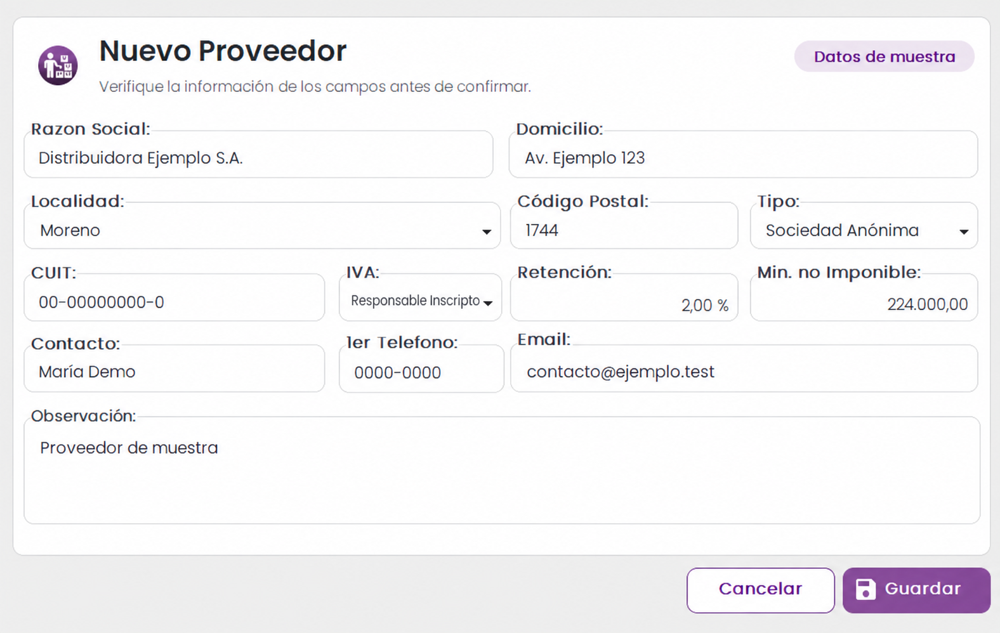

Datos de contacto
Información básica del proveedor disponible en una base consolidada.
Desde la ficha del proveedor hasta el pago: información y documentos para seguir el ciclo de adquisiciones.
Conocer proveedoresGLIX reúne la información del proveedor, el registro de comprobantes, los saldos y la autorización de pagos dentro de un mismo proceso.
El objetivo del módulo es ayudar a comprar bienes y servicios en el momento adecuado, con el precio correcto y la cantidad necesaria.

La ficha de alta consolida los datos necesarios para consultar y evaluar proveedores a lo largo de la relación comercial.
Información básica del proveedor disponible en una base consolidada.
Consulta de las condiciones acordadas para cada relación comercial.
Registro de transacciones y calificaciones de desempeño para acompañar la selección.
El subdiario de compras registra los documentos que forman parte del proceso de adquisición y permite seguir sus efectos administrativos.
Registro de facturas de proveedores dentro del proceso de gestión de compras.
Registro de ajustes a favor vinculados con las operaciones de compra.
Registro de ajustes adicionales dentro del mismo circuito documental.
Las cuentas corrientes permiten monitorear los saldos pendientes y relacionar los movimientos con cada proveedor.
Seguimiento de los importes a pagar a proveedores y acreedores.
Consulta de cuentas por cobrar dentro de la administración financiera.
La orden de pago formaliza la autorización del desembolso; el módulo también prepara archivos utilizados para presentaciones fiscales.
Proceso de autorización de pagos a proveedores y acreedores, con la documentación correspondiente.
Cálculo de retenciones basado en la alícuota del proveedor.
La documentación puede exportarse a formatos como Word, Excel y PDF.
Generación de archivos TXT de IVA e Ingresos Brutos para su importación mensual en Portal IVA.
Escribinos para conversar sobre tu circuito de compras y pagos.